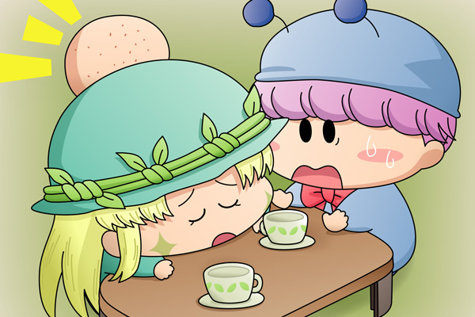

ムルモとクモモは３階へ急ぎ足で駆け上がり、一番奥のアロマの部屋の前に立ちました。ムルモがドアノブに手をかけると鍵のかかっていなかったドアが何の異常もなく開き、そして部屋の奥へ進んだ二人の目に飛び込んできたものは・・・・・・。
ムルモ「アロマしゃん！？」
クモモ「アロマさん、起きてくださいクモ・・・」
二人が呼びかけても、テーブルに伏したアロマは眠ったままぴくりとも動きません。

ムルモ「はっ、そのたんこぶはまさか・・・」
クモモ「きっとヤシチさんと同じように『ぐっすりおやすみハンマー』で
殴られたのクモ」
ムルモ「どうしてアロマしゃんが・・・。
しかもヤシチしゃんのときよりたんこぶが大きいような気がするでしゅ」
クモモ「もしかしてアロマさん、事件に関する何かに気付いてしまったクモ？」
ムルモ「はっ、そういえば・・・」
クモモ「？」
夕食の後でアロマから事件に関する手がかりを聞くことになっていましたが、ムルモはとっさに口をふさぎました。
ムルモ「いや、ボクには分からないでしゅ。
とにかく犯人が何か手がかりになるようなものを残していないか
探してみることにしましゅ」
クモモ「私もそうするクモ」
ムルモとクモモはアロマに向けていた視線を部屋全体へ移し替えました。
ムルモ「まずは凶器となった『ぐっすりおやすみハンマー』はどこでしゅかね・・・」
クモモ「こっちは見つからないクモ」
ムルモ「こっちもでしゅ。
もしかして犯人が持ち帰ったんでしゅかね・・・？」
クモモ「そういえばヤシチさんのときに使われた『ぐっすりおやすみハンマー』を
キッチンに置いていたはずが、いつの間にかなくなっていたクモ」
ムルモ「クモモしゃん！しっかり隠しておいてくだしゃい」
クモモ「ごめんなさいクモ・・・」
二人はきょろきょろと部屋を確認していると、クモモが何かを見つけたようです。
クモモ「ちょっとムルモさん！
テーブルの上にティーカップが２つあるクモ！」
ムルモ「ほえぇぇっ」
テーブルの上にはアロマが持ってきたと思われるお揃いのティーカップが２つ並んでいて、２つのティーカップには後１～２口くらいで飲み終わりそうな量の紅茶が残っていました。ムルモはアロマの側のティーカップを手に取って、紅茶の温度を確かめてみました。
ムルモ「まだちょっと温かいでしゅ！」
クモモ「アロマさん、夕食のちょっと前まで誰かと一緒に紅茶を飲んでいたのクモ？」
ムルモ「うーん、アロマしゃんが部屋で一緒に紅茶を飲む相手と言ったら・・・。
・・・アロマしゃんは誰かしゃんと違って誰に対しても優しいから
全然分からないでしゅ・・・」
クモモ「犯人は凶器は持って帰ったのに、何でティーカップは片付けなかったクモ？」
ムルモ「これには何か理由がありそう・・・と見せかけて、お間抜けな犯人が
片付け忘れただけなのかもでしゅ・・・」
二人はさらに部屋を探しましたが、これ以上手がかりになりそうなものは何も見つかりませんでした。
クモモ「下で皆さんがお待ちですから、私たちもそろそろ戻るクモ」
ムルモ「あいでしゅ」
クモモ「アロマさんのことは、騒ぎになるから他の皆さんには黙っておいた
方がよさそうクモね」
ムルモ「クモモしゃんの言うとおりでしゅ。
みんなには疲れて眠っているということにするでしゅ」
何とアロマまで事件の犠牲者にしてしまいました(^^;。このまさかの展開にムルモは冷静でいられるかどうか？ ぜひ次回にご期待ください！次回ももう少し夕食後のシーンが続く予定です。
(2008/6/24)